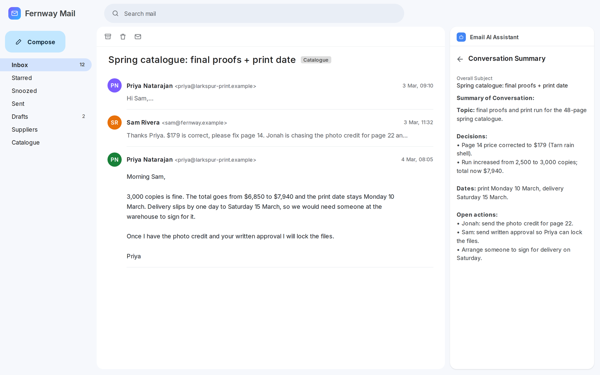
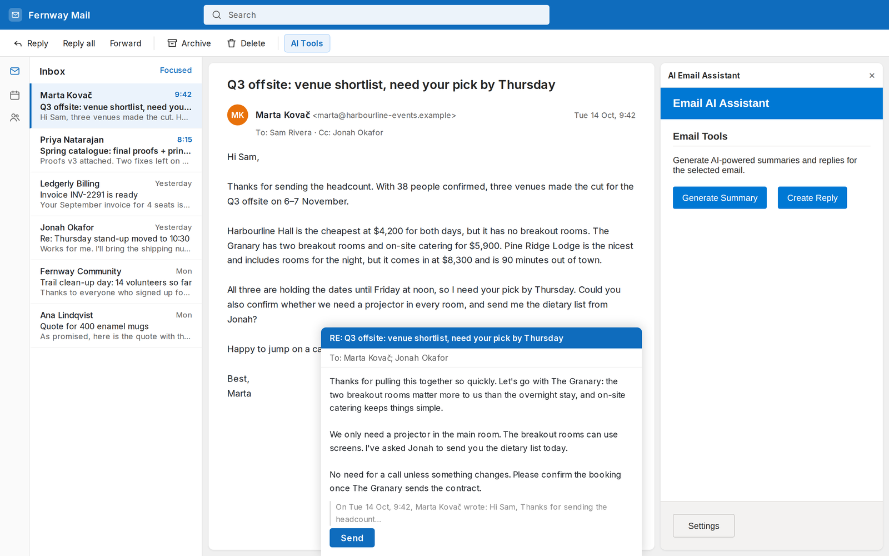
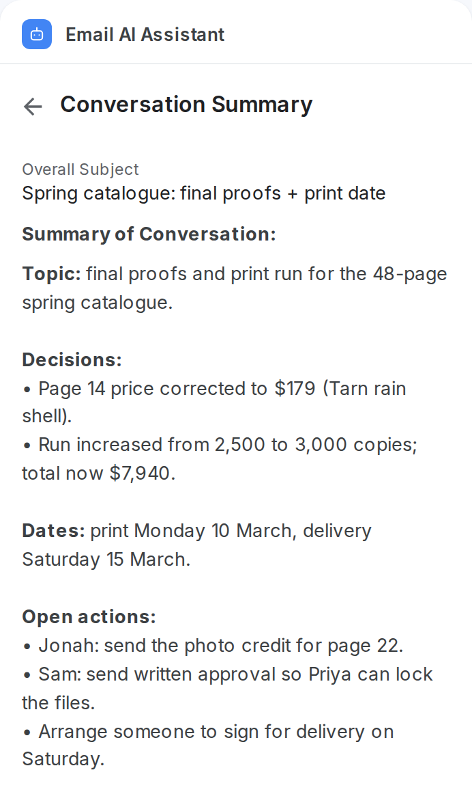
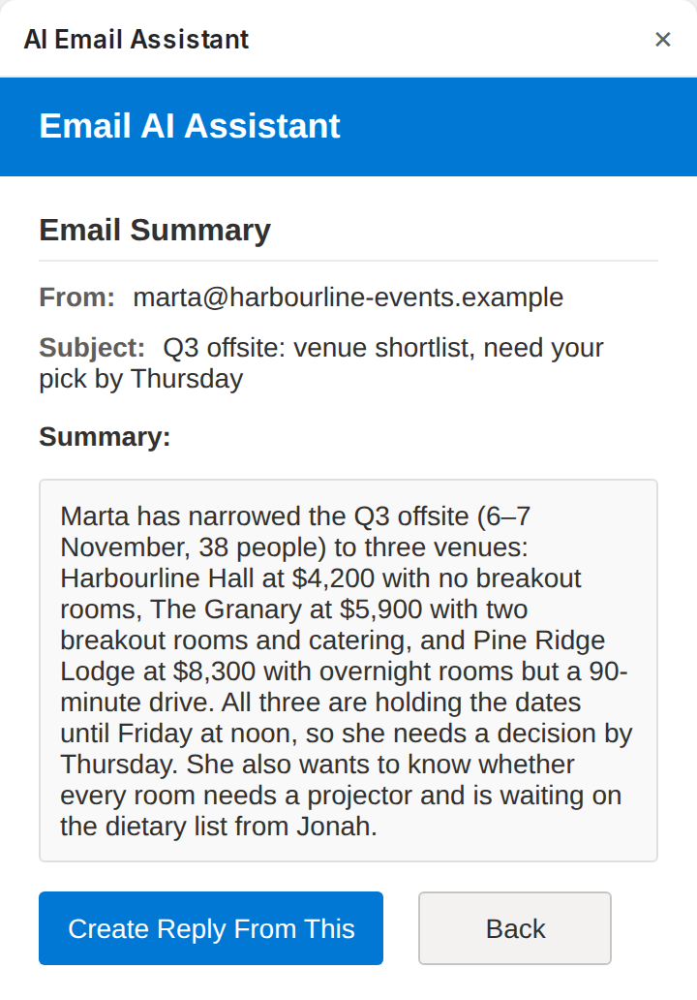
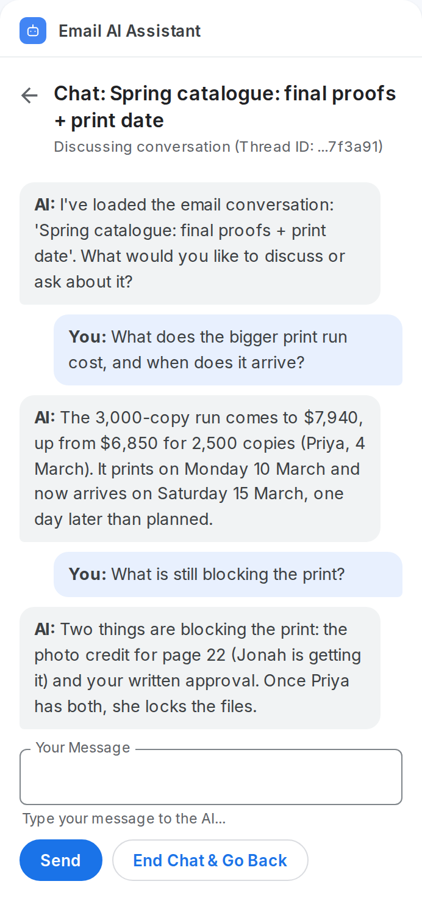
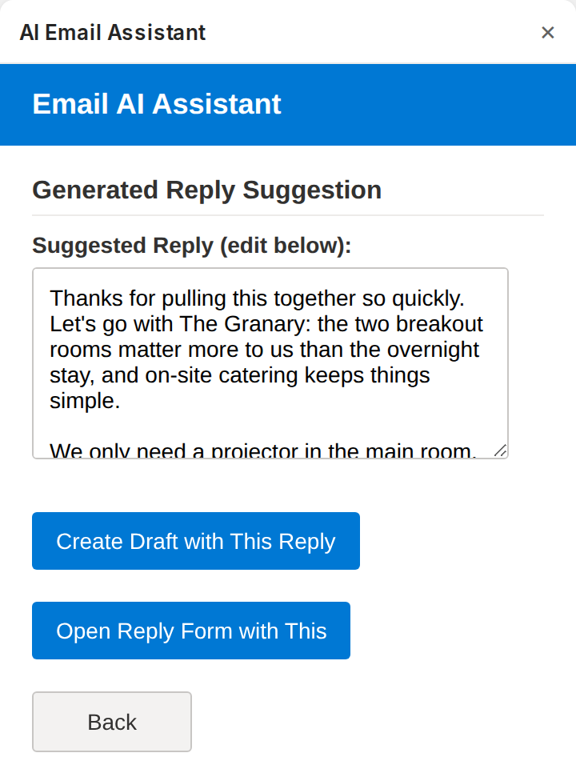

Real panels, invented inbox
Four things it does in the side panel




Add-ins for Gmail and Outlook that summarise an email or a whole thread, draft the reply and answer questions about it, right in the side panel.




The add-in wakes up beside the message you are reading, in Gmail or Outlook.
Only the open message, or its thread, is read through the Gmail or Outlook add-in API.
The email text goes to the OpenAI API, using the key you saved in the add-in's Settings.
A summary, an editable reply draft or a chat answer. Nothing is sent until you choose.
The Next.js summarizer is the early, offline version: it picks the first sentences and makes no AI call.
AI add-ins that summarise emails, draft replies and answer questions about a thread, in the side panel.

